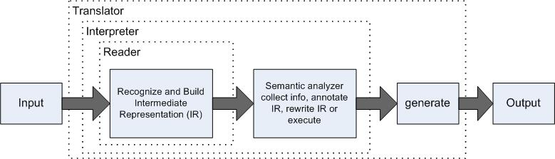

The simplest of options that you have when designing an external DSL is
when you have a custom syntax that you've developed a parser
for.
The parsing engine first lexicalizes the input stream, converting them
to recognizable tokens. These tokens are also known as the
terminals of the grammar. The tokens are then fed on to the
production rules and parsed as valid sentences of the grammar.
The parsing infrastructure is the only processor that does everything
required to process the input DSL script and generate the necessary
output.
A language is just a set of valid sentences. Every language appllication will have a parser (recognizer) component. The whole point to writing a grammar or Semantic Model is so you can build a programthat recognizes sentences in that language.
Language applications can be complicated and with anything complicated we want to break them down into bite-size chuncks. The goal is to get the components to fit together in a multistage pipeline that analyzes or manipulates an input stream. The pipeline gradually converts an input sentence (valid input sentence) to a handy internal data structure or translates it to a sentence in another language.
The basic idea is the reader recognizes the input and builds an intermediate representation (IR) that feeds the rest of the application. The intermedeiate stages form the semantic analyzer which figures out what the input means. At the end, a generator emits output based upon the IR and what the application learned in the intermediate stages.
There are four broad application catagories to the pipeline described above:
from xml.dom import minidom, Node
def scanNode(node, level = 0):
msg = node.__class__.__name__
if node.nodeType ==
Node.ELEMENT_NODE:
msg += ",
tag: " + node.tagName
print(" " * level * 4, msg)
if node.hasChildNodes:
for child
in node.childNodes:
scanNode(child,
level + 1)
doc = minidom.parse('planets.xml')
scanNode(doc)
from xml.etree import ElementTree as etree
def main():
tree =
etree.parse("planets.xml")
root = tree.getroot()
print("root: ")
print(root)
for child in root:
print("
child: ")
print(child)
for
grandchild in child:
print("
grandchild: ")
print(grandchild)
if __name__ == "__main__":
# Someone is launching this
directly
main()
A generic template for displaying HTML for a lecture!
It lacks images, but at least it has style. And it has links, even if they don't go anywhere…
int x = rand()*17;
There should be more here, but I don't know what yet.
Made 31 August 2011